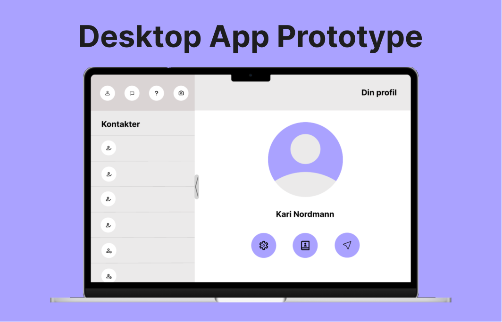
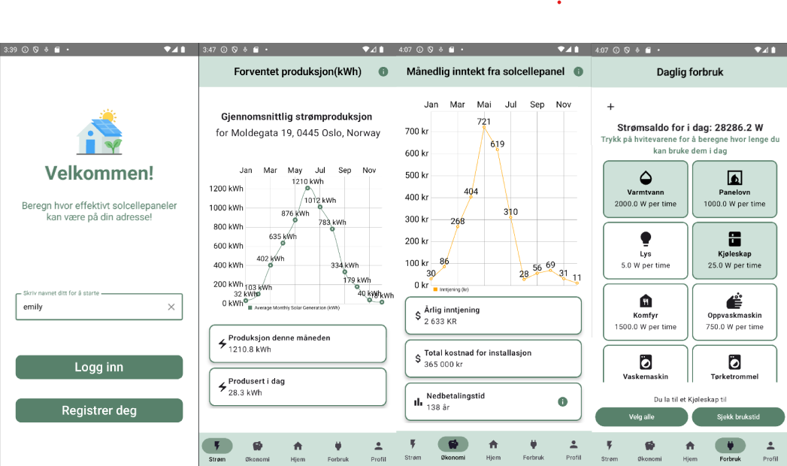

I'm currently pursuing a master's degree in Informatics: Design, use and interaction at the University of Oslo. I’m passionate about creating user-friendly digital experiences that blend design with functionality. I have skills within in user research, prototyping and programming which I hope to apply to projects in the future. I’m excited to continue growing in the field and contribute to innovative projects.

A web app prototype i made in Figma in the course IN1050 - Introduction to design, use and interaction. I used data from interviews with users to create an app design that could help create a good social and work environment in home offices.
Read more!
In this project our goal was to create a desktop light with pause intervals, that helps with maintaining a healthy vision and work balance. We focused on user involvement in the design process and performed interviews, workshops to analyze and retrieve data used to design both low- and high-fidelity prototypes
Read more!
This was a group based project with a focus on agile software development. Our goal was to make an Android application that makes it easier to get information about cost of installing solar panels on a cabin/house and how much you can save on using solar panels. The app also includes a function that lets you choose different housewares and how much power they will use for off-grid cabins. The app also shows the users house on a map and weather conditions that can affect the panels power. During the project we had interviews and user-testing with users who were interested in installing solar panels.
Read more!